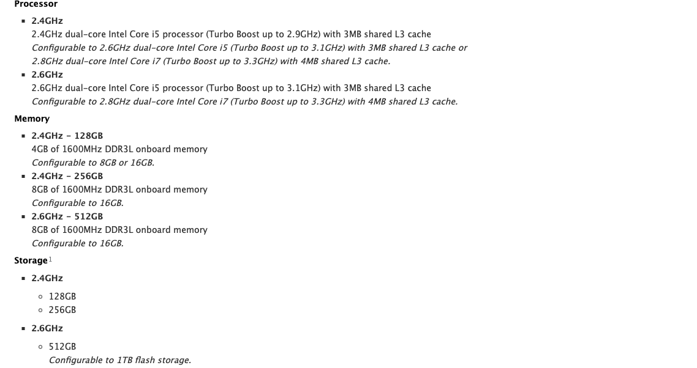

What's the best mac for you?
Posted by APF_admin on Sunday, January 28, 2024
This time, we are going to find the best mac for you!
First, what type of Mac do you want/need?
MacBook Air
MacBook Pro
Mac Mini
iMac
Mac Pro
Why old devices
MacBook Air - The best laptop deal
If you need a MacBook Air, that performs well and can browse the internet and perform reasonably in games like Minecraft
I would suggest a Mid 2013 MacBook Air with an upgraded i7 or an Early 2015 MacBook Air with the newer 5th gen i7, it also natively supports macOS Monterey.
If you just plan to use your mac for internet browsing, the 2011/2012 models are also amazing devices! Although, keep in mind if you need macOS Big Sur for any apps, the 2011/2012 devices will only support up to macOS Catalina.
If running macOS Catalina is ok, and you don't need the best performance, go for the cheaper 2011 or 2012 MacBook Air. They can be found cheaper than a 2013 but the 2013's are a better deal.
I would not suggest a 2008-2009 MacBook Air due to their badly performing Core 2 Duo, go for atleast a normal i5 in a 2010/2011/2012/2013 model.
I would also keep in mind that if you are getting a 2010-2011 MacBook Air, you will only get macOS High Sierra. Which was released in 2017. If that is a problem, get a 2012/2013.
If you need a mac running the latest os, look at our "Why old devices" section. You can click the button for our Why old devices section at the top of the page.
MacBook Pro
If you like MacBook Pro's, we have selected the perfect MacBook Pro for you.
We recommend the Late 2013 MacBook Pro as it supports Big Sur, has the same Core i7 CPU option as the MacBook Air's of its time-frame.
The Late 2013 MacBook Pro's still perform amazingly 11 years later on Big Sur, these macs spefically can be found for as low as $125.00. That's only about a $35-40 difference from the Air.
It's specs are still good to this day, modern macs still have the 1TB Storage Option.

This device is a great performer all these years later in 2024.
This mac performs like a beast on Big Sur just like the previous 2012 model on Catalina.
If you need a mac running the latest os, look at our "Why old devices" section. You can click the button for our Why old devices section at the top of the page.
Mac Mini - The compact powerhouse
This device is a small, yet powerful mac desktop!
If you are looking for a powerful Mac Mini, get the Late 2014. It has native Big Sur support, a better processor than previous models, etc.
If you don't need Big Sur support and don't need the best processor, go for the Late 2012 model, it comes with macOS Catalina support and still runs pretty well.
You can find the Late 2012 for as low as $80, and the Late 2014 for as low as $95.
These powerhouses can run smoothly even with their i5/i7 CPU's! They're good for browsing, streaming movies, servers, light gaming and more!
If you need a mac running the latest os, look at our "Why old devices" section. You can click the button for our Why old devices section at the top of the page.
iMac - The best AIO desktop
The iMac is a very powerful and beautiful device. I think for a mac desktop, the iMac and Mac Mini are the best options. They provide great performance and they keep coming down in price over time which makes them a great deal.
These devices pack lots of ports, a beautiful crisp display and a powerful CPU!
If you are looking for an iMac that runs macOS Big Sur, I recommend the Mid 2014 one as it is a very powerful device like most other iMac's. If you want a 5K display, get the Late 2014 model, it really does pack a beautiful crisp display.
If you don't need Big Sur support and Catalina works for you, I recommend either the Late 2012 21.5" display iMac or the crisper, Late 2012 27" display model.
You can pick up a Late 2014 model for as low as $300. You can pick up the Late 2012 model for as low as $135!
If you need a mac running the latest os, look at our "Why old devices" section. You can click the button for our Why old devices section at the top of the page.
The Mac Pro is a beast of a desktop just like the Mac Mini and iMac. These devices are easily upgradable which makes it even better.
If you are looking for a Mac Pro the supports the macOS Monterey, get the Late 2013 trash can Mac Pro. It is a pretty good deal if you think about it.
You can pick up a nice beast of a 2013 Mac Pro for as low as $249.99!
This device can run macOS Monterey smoothly and most apps support macOS Monterey so this is a perfect device.
These Mac Pro's come with up to a 3.7GHz Xeon E5, 12GB RAM and up to 1TB of storage.
If you need a mac running the latest os, look at our "Why old devices" section. You can click the button for our Why old devices section at the top of the page.
Why do we recommend older Mac models?
We recommend older Mac models that still support at least Catalina or Big Sur because with a tool called Open Core Legacy Patcher (link below), you can install macOS Sonoma and newer on any of these recommended devices.
Open Core Legacy Patcher Download
Open Core Legacy Patcher (OCLP) lets you run the latest macOS versions on old hardware.
We are not recommending the oldest compatible devices because the older the device, the worse performance, if you are running OCLP macOS Sonoma off of an SSD, it will run perfectly
The newer the device we are recommending, the better performance you will get with that mac.
OCLP minimum Mac requirements
MacBook Air 2009 (2,1) or newer
MacBook Pro 2008 (4,1) or newer
Mac Mini 2009 (3,1) or newer
MacBook 2008 (5,1) or newer
iMac 2007 (7,1) or newer
Mac Pro 2008 (3,1) or newer
By APF_admin on Sunday January 28, 2024